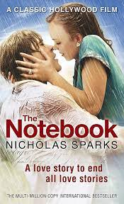

Pride and Prejudice
Jane Austen
Delve into the world of manners, societal expectations, and love in "Pride and Prejudice." Jane Austen's iconic novel takes readers on a journey through Regency-era England, exploring themes of class, romance, and personal growth. With its unforgettable characters, witty dialogue, and insightful social commentary, this book offers a timeless tale of love overcoming societal constraints and the importance of understanding and acceptance.
Jane Eyre
Charlotte Brontë

Experience a captivating and empowering story of love, independence, and resilience in "Jane Eyre." Charlotte Brontë's masterpiece follows the life of its eponymous protagonist as she navigates the challenges of Victorian society, confronts her own inner demons, and seeks fulfillment on her own terms. With its blend of Gothic elements, passionate romance, and feminist undertones, "Jane Eyre" remains a beloved classic that celebrates the strength of the human spirit.
Gone with the Wind
Margaret Mitchell
Immerse yourself in the sweeping epic of love and survival set against the backdrop of the American Civil War and Reconstruction era in "Gone with the Wind." Margaret Mitchell's iconic novel introduces readers to the headstrong Scarlett O'Hara and her tumultuous journey through a changing society. With its vivid storytelling, complex characters, and exploration of themes like love, loyalty, and resilience, this book has become a timeless classic that captures the essence of a pivotal period in American history.
Outlander
Diana Gabaldon
Embark on a thrilling adventure through time and love in "Outlander." Diana Gabaldon weaves a captivating tale of Claire Randall, a World War II nurse who finds herself transported to 18th-century Scotland, where she becomes entangled in political intrigue and a passionate romance. With its blend of historical fiction, time travel, and complex relationships, "Outlander" offers a compelling narrative that transports readers to a world of adventure, romance, and self-discovery.
The Notebook
Nicholas Sparks
Indulge in a heartwarming and emotionally poignant love story with "The Notebook." Nicholas Sparks captures the essence of enduring love as he tells the tale of Noah and Allie, two young lovers whose paths diverge but whose connection remains unbroken. This novel explores themes of love, memory, and the power of fate, offering a tale that tugs at the heartstrings and reminds us of the enduring power of true love.
Wuthering Heights
Emily Brontë
Venture into the atmospheric and tumultuous world of "Wuthering Heights." Emily Brontë's masterpiece delves into the passionate and destructive love story between Catherine Earnshaw and Heathcliff. Set against the haunting moors of Yorkshire, this novel explores themes of revenge, obsession, and the boundaries of social class. With its complex characters and darkly intense narrative, "Wuthering Heights" continues to captivate readers and delve into the complexities of human emotions.
The Fault in Our Stars
John Green
Experience a tender and heartfelt exploration of life, love, and the fragility of existence in "The Fault in Our Stars." John Green's poignant novel introduces Hazel and Gus, two teenagers who meet at a support group for cancer patients and embark on a journey that defies expectations. This book offers a profound examination of mortality, resilience, and the power of love, leaving readers with a deep appreciation for the preciousness of life.
Me Before You
Jojo Moyes

Prepare to be moved by the poignant story of Louisa Clark and Will Traynor in "Me Before You." Jojo Moyes crafts a compelling narrative that explores the complexities of life, love, and the choices we make. This novel delves into thought-provoking themes surrounding disability, personal growth, and the transformative power of human connection. With its heartfelt storytelling and memorable characters, "Me Before You" offers a powerful emotional journey that leaves a lasting impact.
The Time Traveler's Wife
Audrey Niffenegger
Embark on a unique and captivating love story that transcends time in "The Time Traveler's Wife." Audrey Niffenegger's novel follows the intertwined lives of Henry, a man with a genetic condition that causes him to time travel, and Clare, the woman who loves him across different moments in time. Through its exploration of love, destiny, and the complexities of relationships, this book invites readers to ponder the nature of time and the power of love to transcend temporal boundaries.
Romeo and Juliet
William Shakespeare
Immerse yourself in the timeless tale of forbidden love, tragic fate, and feuding families with "Romeo and Juliet." William Shakespeare's iconic play captures the intensity of young passion, the power of destiny, and the consequences of societal divisions. With its poetic language, memorable characters, and universal themes of love and loss, "Romeo and Juliet" remains an enduring masterpiece that continues to resonate with readers of all ages.